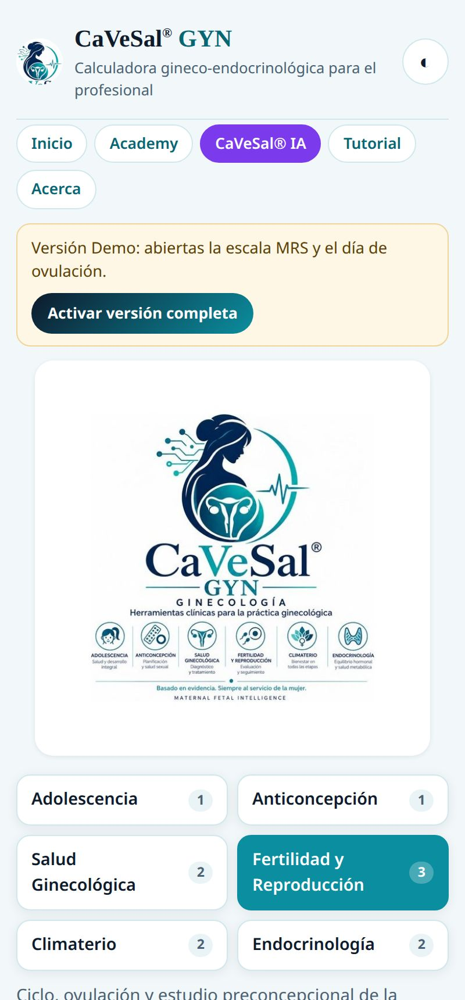
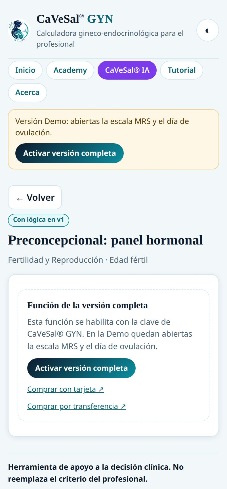
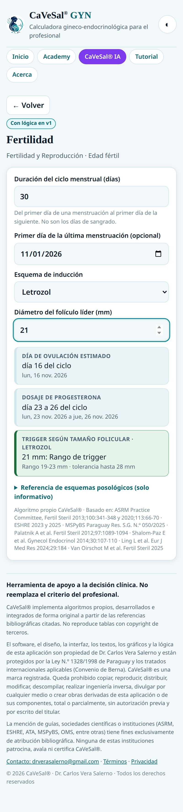
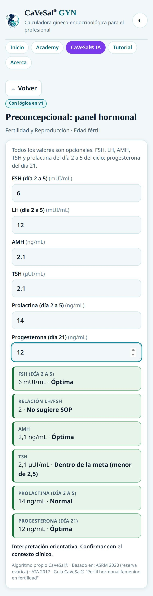

Antes de empezar
Qué es CaVeSal® GYN y para quién es
Qué es
CaVeSal® GYN es una calculadora gineco-endocrinológica para profesionales de la salud. Reúne funciones de fertilidad, estudio preconcepcional, climaterio y, en próximas versiones, adolescencia, anticoncepción, salud ginecológica y endocrinología.
Cada función calcula su propio resultado en el mismo bloque donde cargás los datos. No hay una pestaña de resultados aparte: lo que cambiás se recalcula al instante.
Al abrir la app por primera vez aparece el aviso legal. Marcá la casilla y tocá Aceptar para continuar.

Demo y versión completa
Demo Abierta para probar: la escala MRS, el día de ovulación con la ventana del dosaje de progesterona, la Calculadora de THM con el algoritmo SEGIRP 2026, el POP-Q del prolapso y el IMC.
Versión completa Suma el momento del trigger según el esquema de inducción, el panel hormonal preconcepcional y todas las funciones que se vayan agregando, sin costo extra.
En la Demo, arriba aparece un aviso amarillo con el botón Activar versión completa. Las funciones cerradas muestran la etiqueta Versión completa y, al abrirlas, un candado con los enlaces de compra.


Instalar y activar
Abrí cavesal.app/cavesal-gyn/ en el navegador del celular o la computadora.
Instalala como app con el botón Instalar app de abajo a la derecha. En Android y en la computadora (Chrome o Edge) abre la instalación directa. En iPhone o iPad, desde Safari, muestra los pasos: botón Compartir, Agregar a pantalla de inicio y Agregar. Queda con el ícono de CaVeSal® GYN y abre sin conexión.
Abrila desde el ícono instalado, tocá Activar versión completa y pegá la clave que te llegó por email (empieza con GYN-). La versión completa queda habilitada de forma permanente.
La clave habilita un dispositivo. Si cambiaste de equipo o borraste los datos del navegador, usá el enlace para reactivarla.

Cómo está organizada la app
Buscador, pestañas, ficha y botones
Buscador, motivo de consulta, etapa de vida y capítulo
Arriba está la Ficha de la paciente. Debajo, el buscador: escribí un síntoma, un cuadro o un estudio (sangrado, dolor, mioma, ectópico, mamografía) y aparecen todos los módulos relacionados.
Las tres pestañas ordenan los mismos módulos de tres formas: Motivo de consulta (Tumor, Dolor, Sangrado y Flujo en grande, y el resto de los motivos), Etapa de vida (adolescencia, edad fértil, climaterio y menopausia, postmenopausia) y Capítulo (ginecología general, endocrinología, fertilidad, anticoncepción, infecciones, suelo pélvico, climaterio, oncología, estudios e imágenes). Un módulo aparece en todos los lugares a los que pertenece. El número de cada botón indica cuántos módulos tiene.
Todas las funciones calculan. En la Demo, las que no están abiertas muestran un candado y el botón Ver ejemplo, que abre un caso ficticio en solo lectura.
Botones de arriba
- Inicio: vuelve a la pantalla principal.
- Academy: abre CaVeSal® Academy con las guías completas. Incluida con la versión completa.
- CaVeSal® IA: abre la IA profesional, que se adquiere aparte.
- Simulador: casos clínicos ficticios para entrenar, libre en la Demo.
- Tutorial: este manual.
- Acerca: autoría, ecosistema, bases clínicas y aviso legal.
- El botón redondo de la esquina cambia entre tema claro y oscuro.
Funciones que ya calculan
Cada bloque muestra su resultado y sus fuentes
Fertilidad: ovulación, progesterona y trigger
Algoritmo propio CaVeSal® · Basado en: ASRM 2013 y 2020, ESHRE 2023 y 2025, MSPyBS 2025
Cargá la duración del ciclo en días: desde el primer día de una menstruación hasta el primer día de la siguiente.
Si cargás la fecha de la última menstruación, la app muestra también la fecha de ovulación y la del dosaje de progesterona.
Versión completa Elegí el esquema de inducción (clomifeno, letrozol o gonadotropinas) y el diámetro del folículo líder en milímetros.
La app indica si el folículo está en rango para el trigger, por debajo o por encima del tamaño recomendado.
Rangos del folículo líder
- Clomifeno: 20 a 28 mm, con mejores tasas entre 23 y 28 mm.
- Letrozol: 19 a 23 mm, tolerado hasta 28 mm.
- Gonadotropinas: 16 a 18 mm, tolerado hasta 20 mm.


Preconcepcional: semáforo, ácido fólico y panel hormonal Versión completa
Tabla adaptada del MSPBS 2022, p. 23 · OMS · ACOG/SMFM 2022 · USPSTF 2023 · CDC · Algoritmo propio CaVeSal® · Basado en: ASRM 2020 · ATA 2017
Semáforo: cargá edad, peso, talla, hemoglobina, palidez, sífilis y VIH, y marcá los criterios rojos y amarillos que tenga. Gana el color más alto. Si falta un dato obligatorio, no se clasifica en verde. Cada color muestra la conducta del MSPBS, y las ambigüedades del cuadro (35 años, Hb entre 11 y 12, IMC de 30) aparecen explicadas.
Ácido fólico: dosis según el color y las indicaciones de dosis alta (defecto del tubo neural previo, diabetes, epilepsia, IMC de 30 o más), con el momento de inicio y fin. Si marcás variante de MTHFR, muestra que no cambia la dosis ni el tipo.
Panel hormonal: todos los valores son opcionales. FSH, LH, AMH, TSH y prolactina se dosan del día 2 al 5 del ciclo; la progesterona, el día 21. La TSH se interpreta con el anti-TPO, la levotiroxina, la FIV/ICSI y el límite superior del laboratorio (4,0 si no lo informa).
Anti-Tg, autoinmunidad y trombofilia: el anti-Tg suma información de autoinmunidad tiroidea; la decisión de levotiroxina sigue basada en el anti-TPO. Si marcás lupus, SAF obstétrico o trombótico, anticuerpos antifosfolípidos, trombosis previa o trombofilia, se muestran las alertas preconcepcionales (ACR 2020, SMFM #64, ACOG PB 197) con enlace a la guía.

Estudio de la pareja infértil Versión completa
Algoritmo propio CaVeSal® · Basado en: OMS 2025 · OMS 2021 · ASRM 2026 · AUA/ASRM 2024 · ESHRE 2023 · ASRM 2020 y 2021 · RCPI 2023
Cuándo estudiar: con la edad y los meses buscando, indica si corresponde iniciar el estudio (12 meses, 6 con 35 años o más, inmediato con 40 o más o con causa conocida). Ambos miembros se estudian a la vez.
Factor masculino: cargá el espermograma; se compara con los límites de la OMS 2021 y se nombra el hallazgo (oligo, asteno, terato, azoospermia). Si es anormal, se repite tras 11 semanas o más y se deriva a urología. El REM tras capacitación orienta IIU, FIV o ICSI con la escala de la guía HC (Sugerencia CaVeSal®).
Factor ovulatorio, reserva y útero-trompas: ciclos, progesterona lútea, FSH, prolactina, TSH y signos de SOMP orientan la causa de anovulación. RFA y AMH clasifican la reserva (no son prueba de fertilidad). Elegí la prueba tubaria (HSG, HyCoSy/HyFoSy, laparoscopia) y su resultado.
Siguiente paso: resume la conducta prioritaria de la pareja, los estudios que faltan y si conviene IIU o FIV según el pronóstico.
↑ Volver al contenidoSOMP: criterios, fenotipo y HOMA-IR Versión completa
Algoritmo propio CaVeSal® · Basado en: Guía internacional 2023 (Teede) · Lancet 2026 · Matthews 1985 · ADA
Criterios: SOMP (síndrome ovárico metabólico poliendocrino) se confirma con 2 de 3: disfunción ovulatoria, hiperandrogenismo y ovario por ecografía o AMH. En adolescentes con menos de 8 años desde la menarca se necesitan los dos primeros; no se usan ecografía ni AMH. Muestra el fenotipo A a D y recuerda excluir tiroides, prolactina e hiperplasia suprarrenal.
Metabolismo: IMC, HOMA-IR (solo descriptivo, sin corte universal), glucemia en ayunas, PTOG y HbA1c con cortes ADA, y la conducta según la guía 2023.
↑ Volver al contenidoClimaterio: escala MRS Demo
Basado en: Heinemann 2004 (Menopause Rating Scale)
Marcá cada uno de los 11 síntomas de 0 (ninguno) a 4 (muy severo). El total, de 0 a 44, se actualiza arriba con su grado de severidad. Debajo se ve el puntaje de cada subescala: somato-vegetativa, psicológica y urogenital.

Mama, cérvix y endometrio Versión completa
Algoritmo propio CaVeSal® · Basado en: ACR BI-RADS v2025 · USPSTF 2024 · ASCCP 2019-2025 · ACOG CO 734 · IETA
Tres bloques independientes. BI-RADS: elegí la categoría y devuelve la conducta (por ejemplo, BI-RADS 0 en menor de 30 sugiere ecografía mamaria; 4 y 5, biopsia). Cuello uterino: sin resultados da el esquema por edad; con citología y VPH, la conducta. Endometrio: etapa, grosor y sangrado, con hallazgos IETA opcionales.
↑ Volver al contenidoMasa anexial: O-RADS, IOTA y GI-RADS Versión completa
Algoritmo propio CaVeSal® · Basado en: ACR O-RADS US v2022 · IOTA · GI-RADS · ACOG PB 174 · RCOG GTG 62
Cargá primero los datos de la paciente (edad, menopausia, CA-125). Cada sistema calcula su resultado y, si es de riesgo, agrega marcadores tumorales, imagen complementaria (RM con contraste o TC) y derivación.
↑ Volver al contenidoÚtero: adenomiosis MUSA y miomas FIGO Versión completa
Algoritmo propio CaVeSal® · Basado en: MUSA 2022 · FIGO PALM-COEIN · STEP-W · ACOG PB 228
MUSA: marcá los rasgos directos e indirectos; un rasgo directo confirma. Miomas: elegí el tipo FIGO; en los submucosos aparece el puntaje STEP-W para planificar la histeroscopía.
↑ Volver al contenidoEndometriosis: #Enzian, rASRM, EFI y conducta Versión completa
Algoritmo propio CaVeSal® · Basado en: ESHRE 2022 · IDEA 2016 · #Enzian 2021 · rASRM 1996 · EFI (Adamson 2010)
Marcá los síntomas y los hallazgos de la ecografía en 4 pasos. Elegí el método de #Enzian (ecografía, RM o cirugía) y cargá cada compartimento: arma el código final. Si hubo cirugía, completá rASRM y el EFI (toma la lesión y el total del rASRM). En Conducta elegí el objetivo: dolor, embarazo, ambos o hallazgo sin síntomas. El botón Copiar resumen lleva el código, el estadio y el EFI.
↑ Volver al contenidoIncontinencia urinaria Versión completa
Algoritmo propio CaVeSal® · Basado en: NICE NG123 · AUA/SUFU 2023 y 2024 · Stamey 1980 · Sandvik 1993 y 2000
Marcá los síntomas: define esfuerzo, urgencia o mixta. En esfuerzo aparece el grado de Stamey; el índice de Sandvik mide la gravedad. El diario miccional de 3 días calcula polaquiuria, nicturia, poliuria y poliuria nocturna. La conducta va de las medidas generales al suelo pélvico, los fármacos con dosis y la cirugía o la tercera línea. Los signos de alarma indican derivar.
↑ Volver al contenidoOncología: estadificación FIGO Versión completa
Algoritmo propio CaVeSal® · Basado en: FIGO 2018 cérvix · FIGO 2023 endometrio · FIGO 2014 ovario · ESGO
Cargá la extensión, el tamaño y los ganglios. Devuelve el estadio, los estudios de extensión, la derivación a ginecología oncológica y la conducta general, sin dosis. En endometrio, el grupo molecular puede cambiar el estadio I o II.
↑ Volver al contenidoPubertad precoz Versión completa
Algoritmo propio CaVeSal® · Basado en: Guías CaVeSal® · MSPyBS Paraguay (2025) · Carel 2009 · Latronico 2016 · Marshall y Tanner 1969 · Speiser 2018
Cargá la edad, los estadios de Tanner (mama y vello pubiano), la velocidad de crecimiento, la edad ósea, la ecografía pélvica (longitud y volumen uterino, relación cuerpo/cuello, línea endometrial, volumen ovárico y folículos) y el perfil hormonal (LH basal, pico de LH con GnRH, estradiol, 17-OHP basal y post-ACTH, DHEA-S). Devuelve el tipo probable (central, periférica adrenal u ovárica, telarquia aislada o adrenarca idiopática), el informe ecográfico armado y la conducta: RMN de cerebro y freno del eje con agonistas de GnRH en la central, o hidrocortisona en la hiperplasia suprarrenal no clásica.
↑ Volver al contenidoDiabetes fuera del embarazo Versión completa
Algoritmo propio CaVeSal® · Basado en: ADA, Standards of Care in Diabetes 2026 · OMS 2006 y 2011
Cargá glucemia en ayunas, PTOG de 2 horas, HbA1c o glucemia al azar con síntomas. Devuelve normoglucemia, prediabetes, rango de diabetes a confirmar o diabetes, con la diferencia entre ADA y OMS y la conducta (estilo de vida, metformina cuando corresponde, planificación del embarazo). No usa los cortes de la gestante.
↑ Volver al contenidoFicha de la paciente Demo
Algoritmo propio CaVeSal® · Basado en: Guías CaVeSal® · US MEC 2024 · NCCN 2025 · OMS (IMC)
Cargá una sola vez la edad, peso y talla, los antecedentes gineco-obstétricos, el tabaco (cigarrillos por día y años, con el índice paquetes-año), los antecedentes personales con su categoría MEC (hipertensión, diabetes, trombosis, trombofilia, cardiopatía isquémica, ACV, migraña, epilepsia, lupus, enfermedad mamaria) y los familiares (cáncer de mama, ovario, colon o endometrio, BRCA, trombosis, diabetes). Devuelve el semáforo de factores de riesgo y qué métodos anticonceptivos puede usar (categoría 1 a 4 y si corresponde solo progestágeno). Los datos se precargan en los módulos.
En la Demo podés tildar y ver el semáforo. Guardar la paciente con su código, abrirla después, exportarla e importarla en JSON es de la versión completa. Con la versión completa, al salir de un módulo se guarda la consulta en la ficha y al volver aparece el botón Restaurar. Los datos quedan solo en este dispositivo, sin nombre ni documento.
↑ Volver al contenidoSangrado uterino anormal: PALM-COEIN Versión completa
Algoritmo propio CaVeSal® · Basado en: Guías CaVeSal® · FIGO 2018 · ACOG CO 557, PB 128, CO 785 y CO 734
Cargá frecuencia, duración y variación del ciclo, volumen, sangrado intermenstrual o poscoital, β-hCG, hemoglobina, el tamizaje de coagulopatía, los factores para biopsia y la causa PALM-COEIN. Devuelve el patrón FIGO, si corresponde estudiar coagulopatía o biopsiar el endometrio, y la conducta por causa, incluido el sangrado agudo abundante.
↑ Volver al contenidoAmenorrea primaria y secundaria Versión completa
Algoritmo propio CaVeSal® · Basado en: Guías CaVeSal® · ASRM 2008 · ESHRE POI 2016/2024 · Endocrine Society 2017
Sigue el algoritmo: definición, β-hCG, TSH y prolactina, FSH, prueba de progestágeno y de estrógeno-progestágeno; en la primaria, desarrollo mamario, útero y cariotipo. Devuelve la causa probable (SOMP, amenorrea hipotalámica, IOP, hiperprolactinemia, Asherman, Turner, MRKH, insensibilidad androgénica, obstrucción) y la conducta.
↑ Volver al contenidoEnfermedad pélvica inflamatoria Versión completa
Algoritmo propio CaVeSal® · Basado en: Guías CaVeSal® · CDC 2021
Cargá los criterios mínimos, adicionales y específicos y los criterios de internación. Devuelve el diagnóstico, si es ambulatorio o de internación, el esquema antibiótico, el manejo del absceso tubo-ovárico y del DIU, la pareja y el control a las 72 horas.
↑ Volver al contenidoDolor pélvico agudo y crónico Versión completa
Algoritmo propio CaVeSal® · Basado en: Guías CaVeSal® · ACOG PB 193, CO 783 y PB 218 · NICE NG126 · CDC 2021 · RCOG GTG 41 · Roma IV · AUA 2022
Agudo: estabilidad, β-hCG y ecografía; si es positiva, embarazo intrauterino, ectópico (metotrexato o cirugía) o de localización desconocida con β-hCG a las 48 horas; si es negativa, torsión, EPI, absceso, quiste roto, apendicitis y causas urinarias. Crónico: 6 meses o más, banderas rojas, causas probables (endometriosis, adenomiosis, congestión pélvica, adherencias, vejiga dolorosa, colon irritable, miofascial, neuropático, psicosocial), estudios y conducta.
↑ Volver al contenidoLaboratorio por cuadro Versión completa
Algoritmo propio CaVeSal® · Basado en: Guías CaVeSal® · OMS 2024 · ADA · ATA 2017 · ASRM 2020/2026 · ESHRE (IOP 2024, RPL 2022) · SOMP 2023 · Endocrine Society · NICE NG23 · ACOG PB 197 · ACR 2020 · CDC 2021
Elegí el cuadro: rutina y preconcepcional, sangrado, ciclo y fertilidad (día 2 a 3, AMH, progesterona del día 21), hiperandrogenismo y metabólico, climaterio, pubertad, perfil inmunológico (antifosfolípidos, trombofilia hereditaria, lupus y abortos a repetición) o secreción vaginal y endocervical. Muestra qué pedir, qué no pedir de rutina, la interpretación de cada resultado y la conducta.
↑ Volver al contenidoEco ginecológica: reserva, ovario poliquístico, trompas y cavidad Versión completa
Algoritmo propio CaVeSal® · Basado en: ESHRE Bologna 2011 · ASRM 2020 · SOMP 2023 · ASRM 2021 · FOAM 2022 · AAGL · ASRM 2016
Elegí qué evaluar. Reserva: RFA y AMH con cortes de Bologna y de hiperrespuesta. Ovario poliquístico: folículos por ovario (8 MHz) o volumen. Trompas: resultado de HSG o HyFoSy por lado y cavidad, con conducta (FIV, salpingectomía por hidrosálpinx, histeroscopía). Histeroscopía: hallazgo y conducta.
↑ Volver al contenidoDensitometría ósea Versión completa
Algoritmo propio CaVeSal® · Basado en: OMS 1994 · ISCD 2023 · BHOF 2022 · AACE 2020 · USPSTF 2025
Cargá los T-score (acepta negativos con coma) o el Z-score en premenopausia, fracturas y FRAX. Devuelve la clasificación, si hay indicación de tratamiento, el muy alto riesgo y el control.
↑ Volver al contenidoInducción de la ovulación Versión completa
Algoritmo propio CaVeSal® · Basado en: ASRM 2022 · ASRM 2020 · ASRM 2024 · SOMP 2023 · umbrales del módulo Fertilidad
Elegí el fármaco y escribí los folículos de cada ovario separados por coma (por ejemplo 18, 14, 11). Devuelve si aplicar la hCG, si cancelar por embarazo múltiple o hiperestimulación, la fecha de la próxima ecografía, el endometrio y el control 48 a 72 h después de la hCG.
↑ Volver al contenidoSíndrome de hiperestimulación ovárica Versión completa
Algoritmo propio CaVeSal® · Basado en: RCOG GTG 5 · ASRM 2024
Marcá factores de riesgo, síntomas y laboratorio. Devuelve la gravedad, la conducta (ambulatoria o internación) y los signos de alarma.
↑ Volver al contenidoAnticoncepción: elegibilidad y métodos Sugerencia en la versión completa
Algoritmo propio CaVeSal® · Basado en: US MEC 2024 (con apéndices E, F, I y J) · OMS 2025 y 2026 · FSRH 2023 · prospectos FDA de Mounjaro (08/2026) y Ozempic (05/2026) · OMS 2018 · Trussell 2011
Un solo módulo en 3 pasos. Arriba, el bloque de categorías de la OMS 1 a 4 y el botón (i) Leyenda con las tres lecturas, I/C, A/C/D y A/C/D/S.
Paso 1: edad, método actual e iniciación o continuación. Paso 2: tocá cada condición o su variante; el buscador las filtra y arriba quedan las marcadas, con × para quitarlas. Incluye barrera, naturales, emergencia e incretinas. Paso 3: la Sugerencia CaVeSal® y los métodos por familia (DIU, solo progestágeno, combinados, lactancia, barrera, emergencia, esterilización y naturales), con filtros. Tocá un método para ver su ficha: Pearl, duración, composición, por qué tiene esa categoría y, en los combinados, las formas de uso (secuencial, extendido fijo, flexible y continuo).
↑ Volver al contenidoCáncer hereditario: BRCA y síndrome de Lynch Versión completa
Algoritmo propio CaVeSal® · Basado en: NCCN · ACOG PB 182 y 147 · Amsterdam II · MSPBS 2025
Marcá la historia personal y familiar. Devuelve los criterios cumplidos, la derivación con panel multigén y, si ya tiene la variante, el seguimiento y la cirugía reductora.
↑ Volver al contenidoMis pacientes y backup en Google Drive Versión completa
Pestaña Pacientes: lista de fichas guardadas con búsqueda, Abrir (carga la ficha y sus consultas) y Borrar. Backup local descarga un .json con todas las pacientes; Abrir Google Drive te lleva a tu Drive para subirlo. En otro equipo, Elegir archivo .json lo importa: Combinar suma las pacientes y deja la versión más reciente de cada una; Reemplazar todo deja solo las del archivo. También acepta el .json de una sola paciente exportado desde la ficha.

Datos desde la Historia Clínica Versión completa
En la Historia Clínica CaVeSal®, el botón Enviar a GYN abre esta app con los datos clínicos estructurados de la paciente, sin nombre ni documento. Cada módulo precarga lo que corresponde y muestra el aviso "Datos recibidos de la HC CaVeSal®", con lo que falta completar a mano.
Reciben datos: escala MRS, elegibilidad MEC, métodos anticonceptivos, elección del progestágeno, anticoncepción de emergencia, Calculadora de THM, incretinas, semáforo preconcepcional, IMC, incontinencia (Diario Miccional), fertilidad, SOMP, pareja, endometriosis, masa anexial, estudios, densitometría, sangrado uterino anormal y la ficha de la paciente.
La ficha solo se precarga si está vacía; desde ahí se le asigna un código y se guarda en Mis pacientes. Todo queda editable y el botón "Descartar datos de la HC" borra lo recibido.
↑ Volver al contenidoElección del progestágeno Versión completa
Algoritmo propio CaVeSal® · Basado en: BMS 2026 · EMA 2013 y 2014 · ESTHER/E3N · Schindler 2008 · Regidor 2018 · LIBERATE · LIFT
Elegí el uso (THM o anticoncepción oral) y marcá las características. Sugiere el progestágeno, qué evitar y el esquema cíclico o continuo. Libido, sueño y riesgo mamario son datos orientativos y no cambian la sugerencia. Incluye el perfil farmacológico por grupo, el riesgo de TEV y las dosis en THM con tibolona.

Anticoncepción de emergencia Versión completa
Algoritmo propio CaVeSal® · Basado en: OMS 2021 · FIGO/ICEC · FSRH 2017 · Cochrane 2019
Cargá las horas desde la relación, el IMC o el peso y la situación. Ordena las opciones por eficacia (DIU de cobre, ulipristal, mifepristona, levonorgestrel y Yuzpe), ajusta la dosis de levonorgestrel y calcula las píldoras de Yuzpe según el anticonceptivo disponible. Muestra el mecanismo de cada uno.

Marcadores tumorales Versión completa
Algoritmo propio CaVeSal® · Basado en: Guías CaVeSal® · ESMO 2018 · ESGO-ESMO-ESP 2024 · RCOG GTG 62 · ACOG PB 174 · Moore 2009
Cargá CA-125, HE4 (calcula ROMA), CEA, CA 19-9 y los marcadores germinales y de cordones sexuales. Devuelve el origen probable, los falsos positivos, qué pedir según la edad y cuándo derivar a ginecología oncológica.
↑ Volver al contenidoEjemplos y Simulador
Para ver qué hace cada módulo y para entrenar
Casos de ejemplo
Cada módulo tiene uno o más casos de ejemplo. En la versión completa, el botón Cargar ejemplo llena los campos y muestra el resultado. En la Demo, los módulos cerrados muestran el caso de ejemplo con su resultado completo en modo de solo lectura, para ver lo que hace la versión completa antes de comprarla.
Simulador GYN
El botón Simulador abre casos clínicos ficticios por sector (adolescencia, anticoncepción, fertilidad, endocrinología, infecciones, suelo pélvico, climaterio y oncología). Cada respuesta muestra su fundamento y el enlace a la bibliografía. Es libre también en la Demo.
↑ Volver al contenidoAcademy, IA y Acerca
El resto del ecosistema CaVeSal®
Academy e IA
CaVeSal® Academy reúne las guías clínicas completas de todas las apps, incluidas las de ginecología, endocrinología y fertilidad. Está incluida con la versión completa: al tocar Academy desde la app, se abre con tu acceso.
CaVeSal® IA es la inteligencia artificial profesional. Se adquiere aparte.
Acerca
Muestra el ecosistema de apps (esta en versión completa y las demás en Demo), el QR para invitar a tus pacientes a CaVeSal® Mamá y CaVeSal® Mujer, los tutoriales, la autoría clínica, las bases clínicas con su bibliografía y el aviso legal.

Aviso legal y contacto
CaVeSal® GYN es una herramienta de apoyo a la decisión clínica dirigida exclusivamente a profesionales de la salud. No diagnostica ni reemplaza el juicio clínico. La mención de ASRM, ESHRE, ATA, OMS, FIGO y otras instituciones tiene fines de atribución bibliográfica; ninguna patrocina, avala ni certifica CaVeSal®.
El software, el diseño, los textos y la lógica están protegidos por la Ley N.º 1328/1998 de Paraguay y el Convenio de Berna.
Consultas: drverasalerno@gmail.com
Actualizado: noviembre de 2026 · © 2026 CaVeSal® · Dr. Carlos Vera Salerno